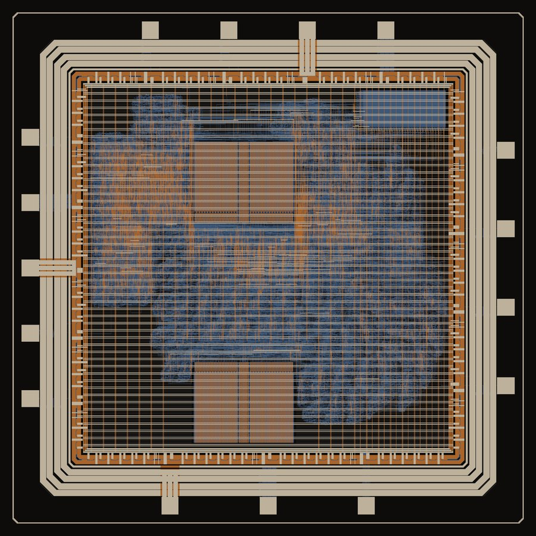

Rakshith Suresh
I take digital designs from RTL to signoff-clean GDS, and I like proving they work: directed and random tests, formal properties, gate-level simulation and the debugging that comes with all three.
Most of my work runs on open-source tools (Yosys, OpenROAD, LibreLane, KLayout, Verilator, cocotb) across Sky130, IHP SG13 and ASAP7. My current chip, Argo, is a RISC-V SoC with an int8 systolic array, signed off on IHP's 130 nm process and heading to fabrication.
Argo: RISC-V SoC with an 8x8 int8 systolic array
PicoRV32 (RV32IM), two 4 KB SRAM macros, a detachable SRAM test block on its own supply, SPI boot loader, UART and a 16-pad IO ring. Signed off with KLayout only. Gate-level simulation of a power-on self-test caught a multiply hang that I traced to X-pessimism in a counter with no reset.
- RTLverified
- Signoffv2.2
- FabricationIHP
- Bring-upnext
Silicon, verification, architecture
8x8 weight-stationary systolic array
Submitted to a ChipFoundry shuttle, then ported to ASAP7 for a cross-node PPA comparison.
PicoRISCV-SoC
PicoRV32 with the systolic array on memory-mapped registers, an SPI slave that cuts the array's 390 IO down to 4 pins, and an interrupt on completion.
UVM testbench for the systolic array
Agents, scoreboard against a reference model, functional coverage and SVA properties in an open-source UVM flow.
Pipelined RISC-V CPU with formal checks
Branch prediction and hazard handling, co-simulated against the Spike ISS. The hazard unit is proven with SymbiYosys, and a seeded bug produces a counterexample.
Multi-warp SIMT GPU core
Two warps, eight lanes and a round-robin warp scheduler, checked against Spike.
Custom ISA extension for a matrix accelerator
MLOAD, MMUL and MSTORE instructions drive the systolic array from an RV32I core. Runs on an Arty A7-100T, built in CI.
- HDL
- SystemVerilog, Verilog, SVA
- Verification
- UVM (uvm-python), SVA, functional coverage, cocotb, Synopsys VCS, Verilator, Icarus, SymbiYosys, Spike
- Physical design
- Yosys, OpenROAD, LibreLane, OpenSTA, KLayout, Magic, Cadence Innovus, Synopsys PrimeTime
- PDKs
- IHP SG13G2 and SG13CMOS5L, SkyWater 130, GF180, ASAP7
- Programming
- Python, Tcl, Perl, Bash, C and C++ (bare-metal RISC-V)
- FPGA
- Vivado, openXC7, Arty A7-100T